01 Identité · Campagne · Signalétique
Concept de re-branding du Musée Océanographique : une nouvelle identité, une campagne d'affiches et un système de signalétique.
Le projet
Donner au musée une identité simple, géométrique et chaleureuse, capable de parler à tous les publics, et de porter une saison d'événements autour de la protection de l'océan.
Le logo réunit deux formes : l'arche, porte d'entrée du musée, et le cerf-volant, qui évoque à la fois la voile, le poisson et le mouvement. Le nom arabe دار الحوت (« la maison du poisson ») l'accompagne.
L'identité se décline ensuite en six couleurs, une typographie fine et lisible, une série de six affiches illustrées à la main et un système de pictogrammes pour orienter les visiteurs.
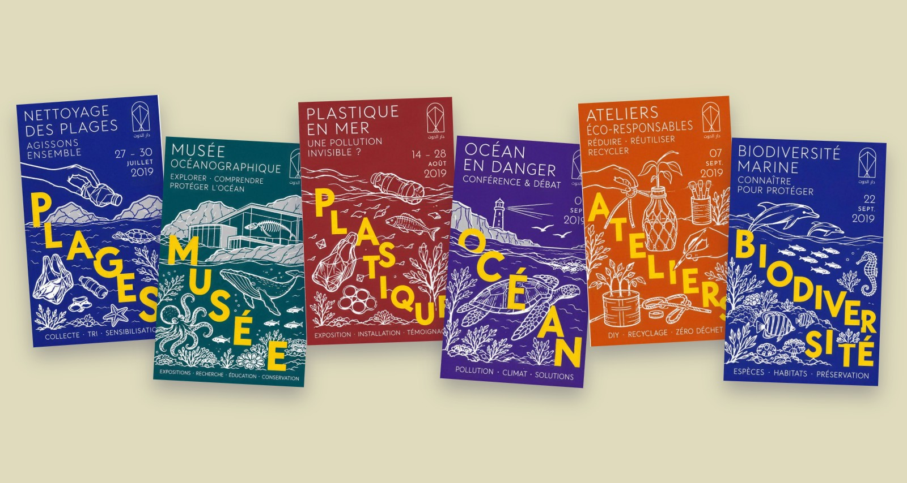
02 Logo
Plusieurs pistes ont été explorées, autour de la vague, du poisson et de l'architecture du lieu. La piste retenue combine l'arche et le cerf-volant dans une construction à la ligne fine, qui reste lisible en très petit comme en grand format.
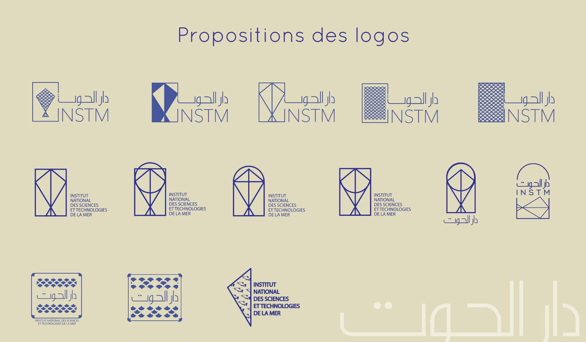
Propositions de logos01 / 03
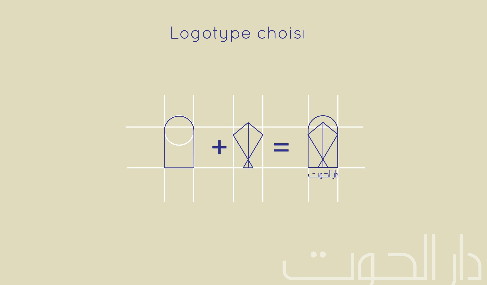
Logotype choisi02 / 03
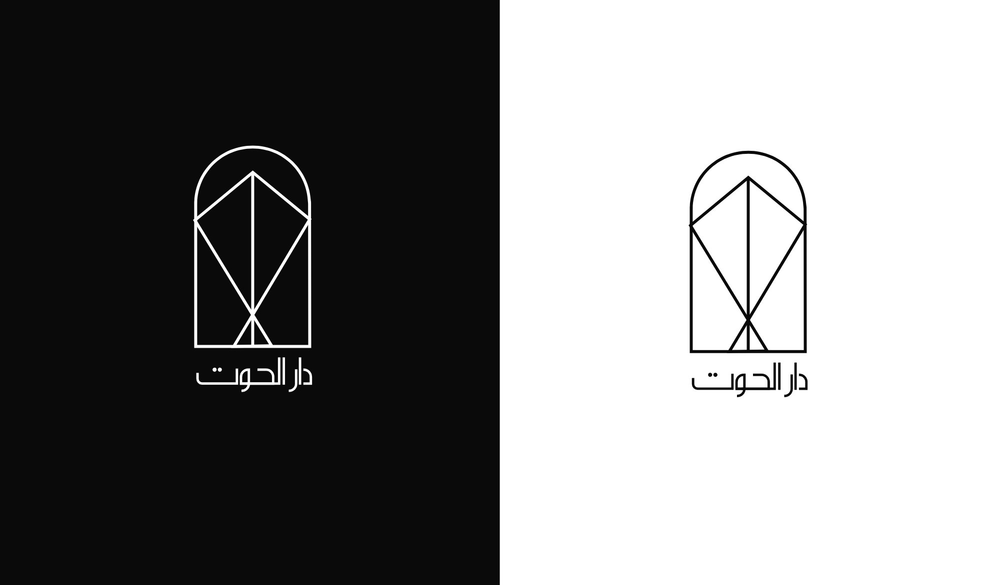
Versions négative et positive03 / 03
03 Construction
L'arche représente la porte du musée : un lieu ouvert, accueillant, qui invite à entrer et à découvrir.
04 Couleurs
Chaque événement de la campagne reçoit sa couleur, tirée de l'océan et du littoral. Survolez une couleur pour l'agrandir, cliquez pour copier son code.
05 Typographie
Une linéale géométrique à la graisse légère, en écho au tracé du logo, pour les titres comme pour les textes. Elle se marie avec un caractère arabe au dessin tout aussi simple.
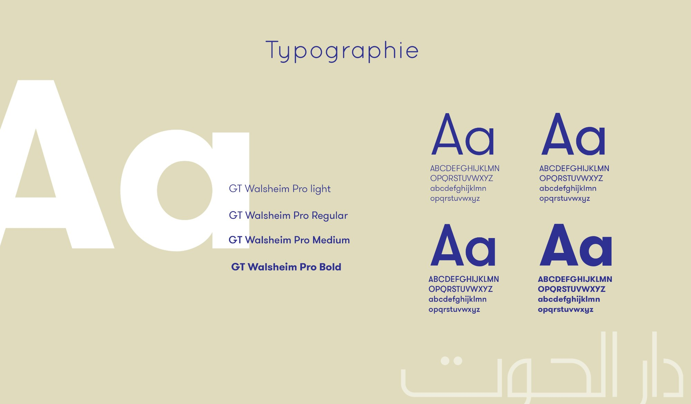
06 Campagne
Une série illustrée au trait blanc, où un grand mot jaune traverse chaque affiche comme une vague. Une couleur par thème, pour une saison d'événements de juillet à septembre 2019.
07 Infographie · Réseaux sociaux
Une infographie verticale, « Les aquariums du monde contre les déchets marins », qui raconte en chiffres l'impact du plastique sur l'océan, puis donne des gestes simples pour agir. Elle se décline en une série de visuels « Le saviez-vous ? » pour Instagram et Facebook.
Publié sur Behance en septembre 2019 · Voir le projet ↗
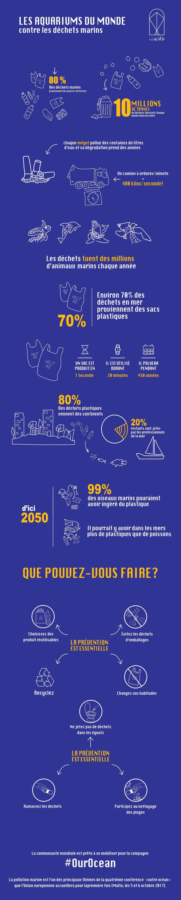
Faites défiler l'infographie ↓
Série « Le saviez-vous ? »
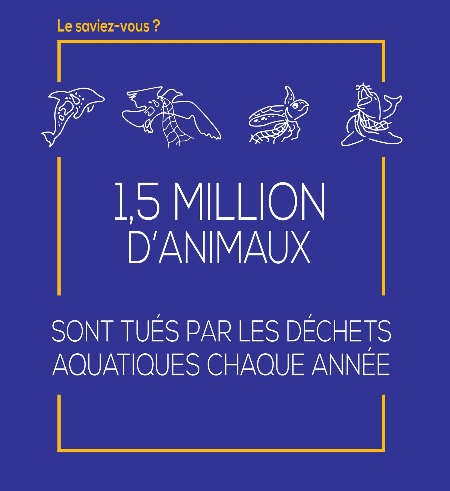
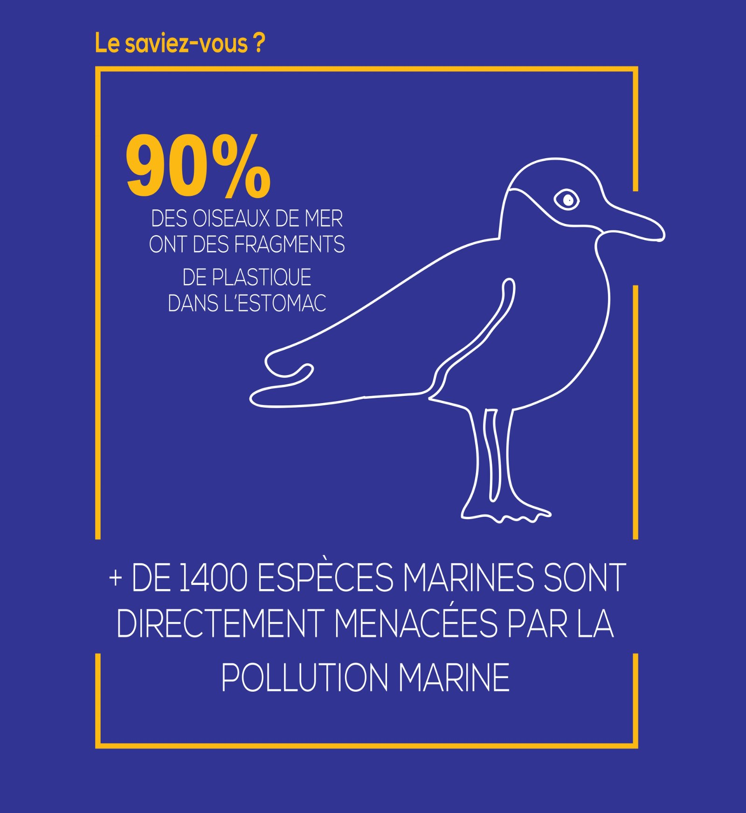
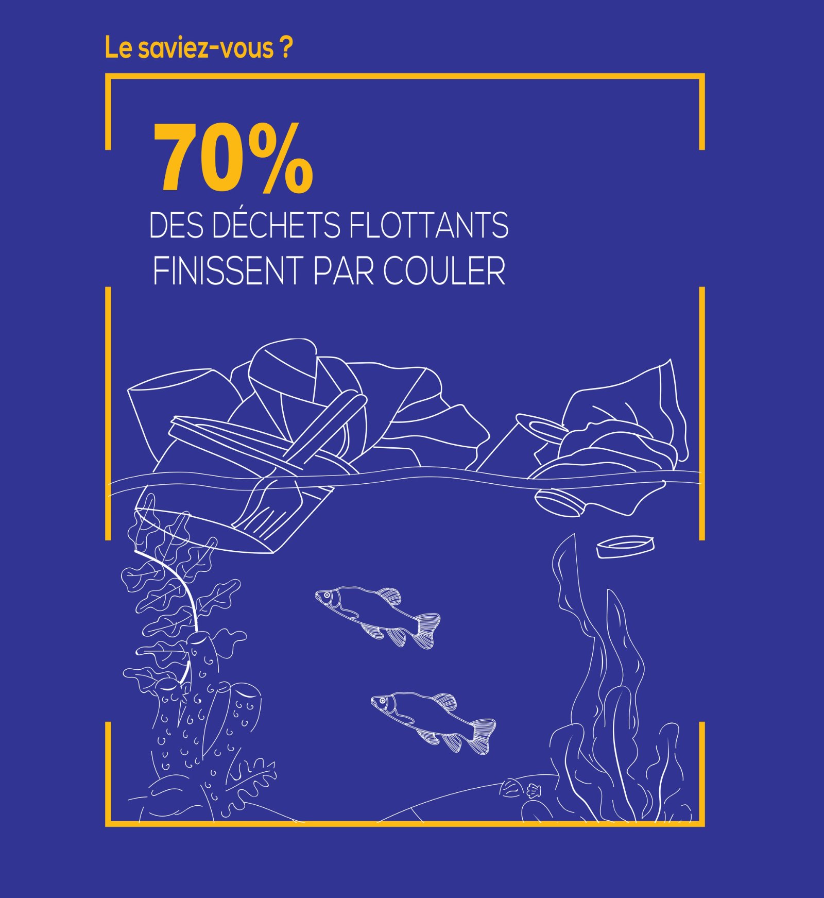
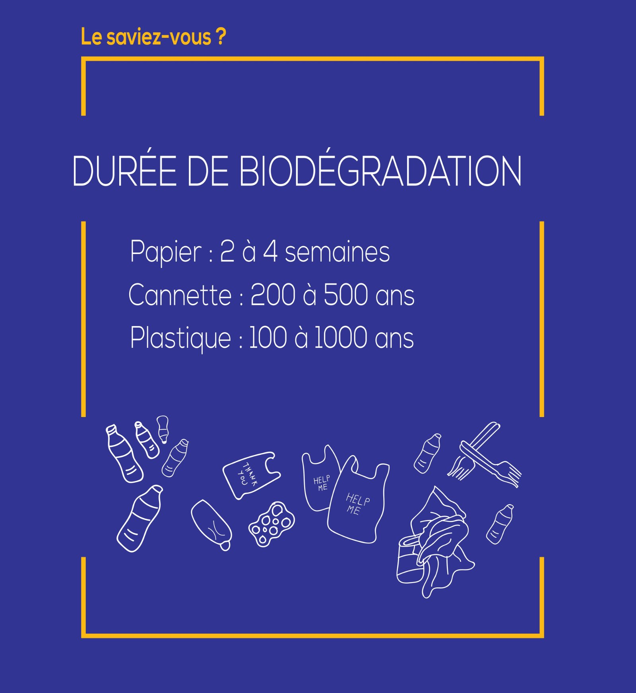
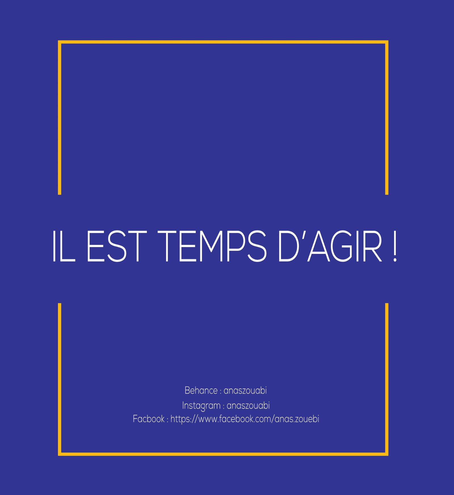
08 Signalétique
Une famille de pictogrammes bilingues, dessinés avec le même trait que le logo, en version claire et foncée pour guider les visiteurs : accueil, salles, sanitaires, accessibilité.
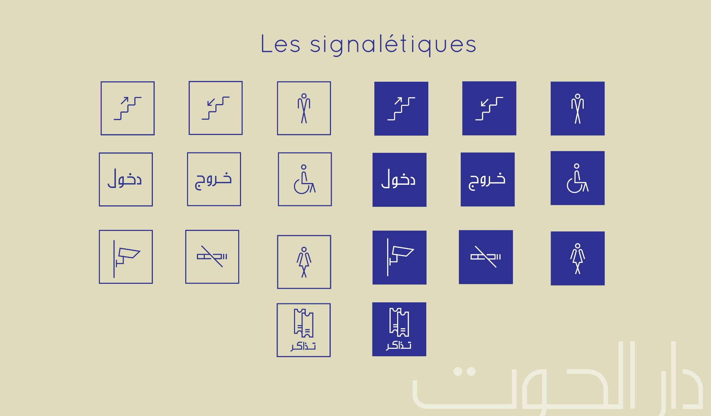
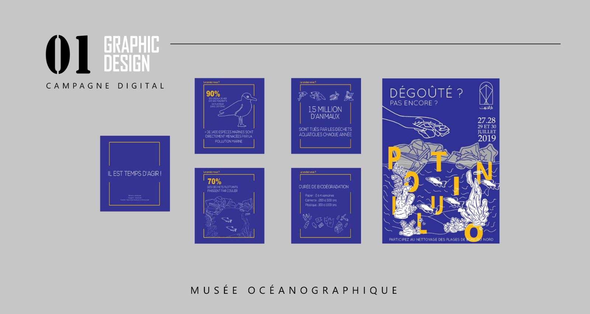